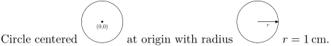

Contents
Summary
The environment \startstaticMPfigure ... \stopstaticMPfigure is used for ...
Settings
Description
\startstaticMPfigure
{name}
creates a separate pdf file called
name
.pdf containing the graphic. This pdf can be included in the document using
\usestaticMPfigure
. ConTeXt is clever enough to recompile the resulting MetaPost file only if something inside the \startstaticMPgraphic has changed. To force the figure files to be regenerated, remove all the
*.mp.md5
files from the current directory.
Examples
Example 1
-
\startstaticMPfigure{center} draw fullcircle scaled 2cm ; dotlabel.bot(textext("(0,0)"),origin) ; \stopstaticMPfigure \startstaticMPfigure{radius} draw fullcircle scaled 2cm ; drawarrow (0,0)--(1cm,0) ; label.bot(textext("$r$"),(5mm,0)) ; \stopstaticMPfigure Circle centered \usestaticMPfigure[center][width=1cm] at origin with radius \usestaticMPfigure[radius][width=1cm] $r=1\,\text{cm}$.
- 